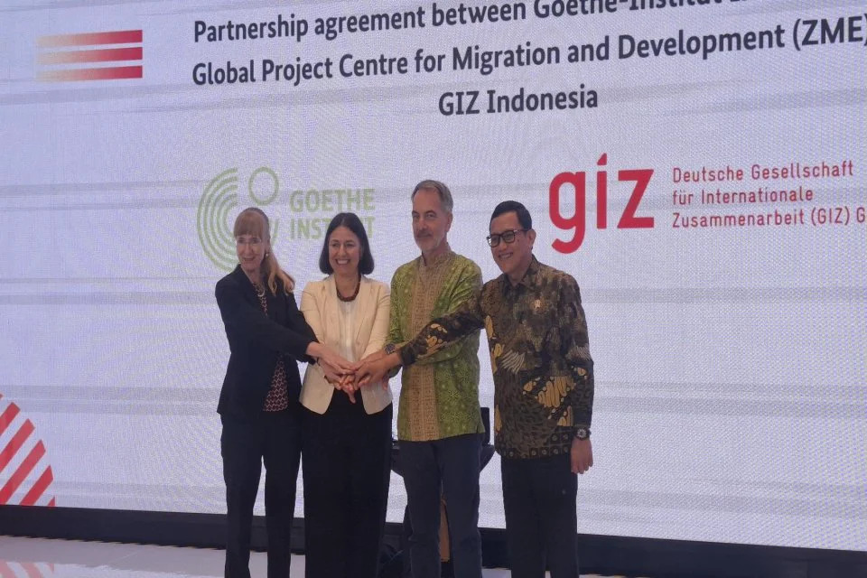
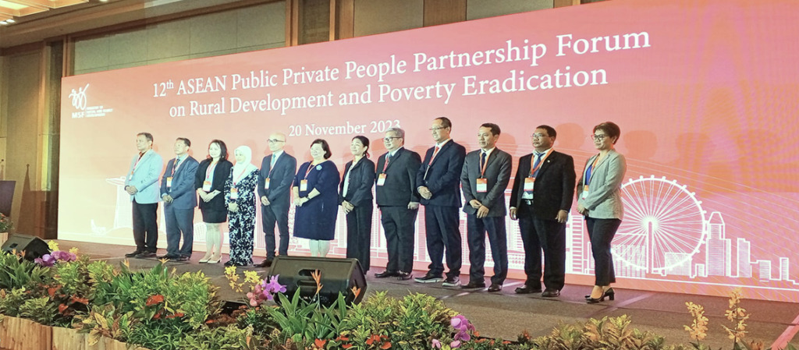
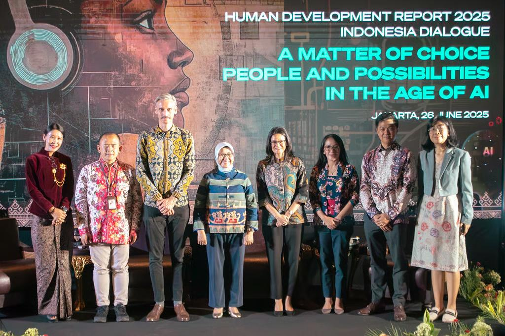
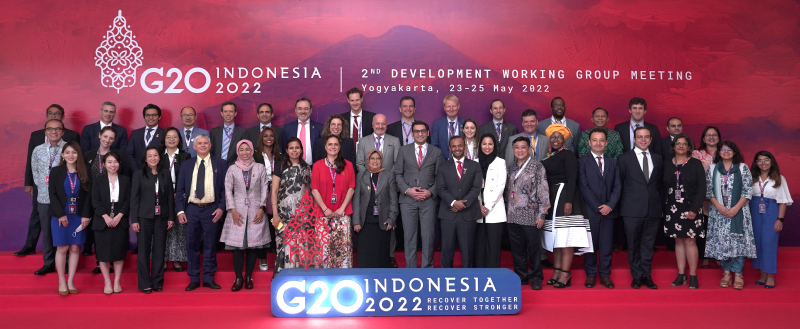

KERJA SAMA
Kerja sama merupakan salah satu cara yang dapat dilakukan oleh Indonesia untuk mengurangi kesenjangan dan mencapai tujuan pembangunan berkelanjutan, khususnya SDGs nomor 10. Melalui kerja sama dengan berbagai negara dan organisasi, Indonesia dapat memperoleh dukungan, pengetahuan, serta sumber daya untuk menciptakan kehidupan yang lebih adil dan sejahtera.
01. KERJA SAMA BILATERAL

Apa yang dimaksud dengan kerja sama bilateral?
Kerja sama bilateral adalah hubungan kerja sama yang dilakukan oleh dua negara untuk mencapai tujuan dan kepentingan bersama. Kerja sama ini dapat dilakukan dalam berbagai bidang, seperti ekonomi, pendidikan, sosial, teknologi, dan pembangunan.
Mengapa Indonesia membutuhkan kerja sama bilateral?
Indonesia membutuhkan kerja sama bilateral untuk memperoleh dukungan dalam mengatasi berbagai masalah pembangunan, termasuk kesenjangan sosial dan ekonomi. Melalui kerja sama ini, Indonesia dapat bertukar pengetahuan, mendapatkan bantuan teknis, serta mengembangkan program yang membantu masyarakat memperoleh kesempatan yang lebih merata.
Contoh kerja sama Indonesia dengan Jerman
Salah satu contoh kerja sama bilateral Indonesia adalah kerja sama dengan Jerman melalui GIZ (Deutsche Gesellschaft für Internationale Zusammenarbeit). Kerja sama ini mendukung berbagai program pembangunan yang berkelanjutan di Indonesia.
Program yang dilakukan
Salah satu bidang kerja samanya adalah Social Protection Initiative serta perencanaan kawasan permukiman perkotaan yang inklusif dan berkelanjutan. Program-program tersebut bertujuan membantu meningkatkan perlindungan sosial dan kualitas lingkungan tempat tinggal masyarakat.
Apa manfaat kerja sama tersebut?
Kerja sama ini dapat memperkuat perlindungan sosial, meningkatkan akses masyarakat terhadap pelayanan dasar, menciptakan lingkungan tempat tinggal yang lebih baik, serta mendukung pemberdayaan ekonomi. Dengan demikian, masyarakat memiliki kesempatan yang lebih besar untuk meningkatkan kesejahteraannya.
Hubungannya dengan SDGs nomor 10
Kerja sama bilateral mendukung SDGs nomor 10 karena membantu mengurangi kesenjangan melalui peningkatan akses terhadap fasilitas, perlindungan sosial, dan kesempatan ekonomi bagi masyarakat.
02. KERJA SAMA REGIONAL

Apa yang dimaksud dengan kerja sama regional?
Kerja sama regional adalah hubungan kerja sama yang dilakukan oleh beberapa negara dalam satu kawasan geografis tertentu. Negara-negara tersebut bekerja sama untuk menyelesaikan masalah bersama dan meningkatkan kesejahteraan masyarakat di kawasan mereka.
Organisasi kerja sama regional Indonesia
Salah satu organisasi kerja sama regional yang diikuti Indonesia adalah ASEAN (Association of Southeast Asian Nations). ASEAN merupakan organisasi yang terdiri dari negara-negara di kawasan Asia Tenggara.
Negara anggota ASEAN
ASEAN memiliki 10 negara anggota, yaitu Indonesia, Malaysia, Singapura, Thailand, Filipina, Brunei Darussalam, Vietnam, Laos, Myanmar, dan Kamboja. Negara-negara tersebut bekerja sama dalam berbagai bidang untuk menciptakan kawasan yang lebih maju dan sejahtera.
Program pengentasan kemiskinan di ASEAN
Salah satu bentuk kerja sama ASEAN adalah ASEAN Framework Action Plan on Rural Development and Poverty Eradication (RDPE). Kerangka kerja ini berfokus pada pembangunan wilayah pedesaan dan pengurangan kemiskinan di kawasan Asia Tenggara.
Peran Indonesia dalam kerja sama regional
Indonesia berperan dalam berbagi informasi, mengikuti lokakarya, serta mendukung pengembangan program pemberdayaan masyarakat. Kerja sama juga dapat membantu masyarakat mengembangkan kewirausahaan dan memperluas akses terhadap modal.
Hubungannya dengan SDGs nomor 10
Kerja sama regional membantu mengurangi kesenjangan dengan mendorong pembangunan yang lebih merata, mengurangi kemiskinan, dan meningkatkan kesempatan ekonomi bagi masyarakat di negara-negara ASEAN.
03. KERJA SAMA MULTILATERAL

Apa yang dimaksud dengan kerja sama multilateral?
Kerja sama multilateral adalah hubungan kerja sama yang melibatkan tiga negara atau lebih untuk mencapai tujuan bersama. Kerja sama ini biasanya dilakukan melalui organisasi internasional dan mencakup berbagai permasalahan global.
Organisasi yang bekerja sama dengan Indonesia
Salah satu organisasi internasional yang bekerja sama dengan Indonesia adalah UNDP (United Nations Development Programme). UNDP merupakan badan Perserikatan Bangsa-Bangsa yang mendukung pembangunan berkelanjutan dan membantu negara mengatasi berbagai tantangan pembangunan.
Bentuk kerja sama Indonesia dengan UNDP
Indonesia bekerja sama dengan UNDP dalam analisis data, penyusunan Human Development Report, serta pelaksanaan program percontohan untuk mengatasi kemiskinan dan kesenjangan. Kerja sama ini membantu pemerintah memahami kondisi masyarakat dan menentukan kebijakan pembangunan yang tepat.
Program yang dilakukan
Salah satu perhatian dalam kerja sama ini adalah membantu kelompok masyarakat rentan agar dapat memperoleh kesempatan untuk berpartisipasi dalam kegiatan ekonomi formal. Dengan begitu, mereka memiliki peluang lebih besar untuk mendapatkan pekerjaan dan meningkatkan pendapatan.
Apa manfaat kerja sama tersebut?
Kerja sama multilateral memberikan manfaat berupa dukungan teknis, bantuan pendanaan, pertukaran pengetahuan, serta penggunaan data sebagai dasar dalam membuat kebijakan. Hal ini membantu pemerintah merancang program yang lebih efektif untuk mengurangi kesenjangan.
Hubungannya dengan SDGs nomor 10
Kerja sama ini mendukung target SDGs nomor 10, yaitu meningkatkan pertumbuhan pendapatan masyarakat yang berada pada kelompok 40 persen terbawah agar lebih cepat dibandingkan rata-rata pertumbuhan pendapatan nasional.
04. KERJA SAMA INTERNASIONAL

Apa yang dimaksud dengan kerja sama internasional?
Kerja sama internasional adalah hubungan kerja sama antara negara-negara di dunia untuk mencapai kepentingan dan tujuan bersama. Kerja sama ini dapat melibatkan berbagai negara, organisasi internasional, maupun lembaga keuangan dunia.
Mengapa kerja sama internasional diperlukan?
Kesenjangan ekonomi dan sosial merupakan masalah yang tidak hanya dialami oleh satu negara. Oleh karena itu, dibutuhkan kerja sama antarnegara untuk mencari solusi bersama. Setiap negara dapat saling mendukung melalui pertukaran pengetahuan, bantuan pembangunan, perdagangan, dan investasi.
Contoh kerja sama internasional Indonesia
Salah satu contoh kerja sama internasional yang diikuti Indonesia adalah G20. G20 merupakan forum kerja sama internasional yang membahas berbagai persoalan ekonomi dunia dan mendorong pertumbuhan ekonomi yang kuat, berkelanjutan, dan inklusif.
Peran Indonesia dalam G20
Indonesia berpartisipasi dalam berbagai pembahasan G20, termasuk melalui G20 Development Working Group. Indonesia bersama negara anggota G20 dan lembaga keuangan internasional membahas upaya pembangunan, pengurangan kesenjangan, serta peningkatan kesejahteraan masyarakat.
Bentuk kerja sama yang dilakukan
Kerja sama dapat dilakukan melalui pembahasan perdagangan yang lebih adil, dukungan pembiayaan pembangunan, penguatan perlindungan sosial, serta pendanaan infrastruktur. Berbagai upaya tersebut diharapkan dapat membuka lebih banyak kesempatan bagi masyarakat.
Hubungannya dengan SDGs nomor 10
Kerja sama internasional mendukung SDGs nomor 10 dengan mendorong pertumbuhan ekonomi global yang lebih stabil dan merata. Selain itu, kerja sama ini dapat membantu meningkatkan investasi, menciptakan lapangan pekerjaan, dan memperluas kesempatan bagi masyarakat di berbagai negara.